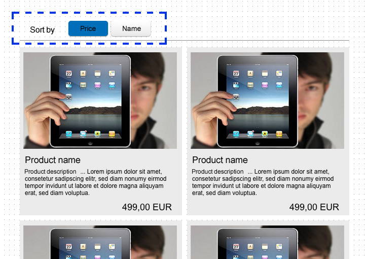
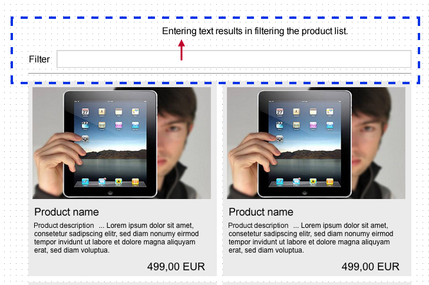
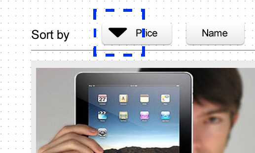
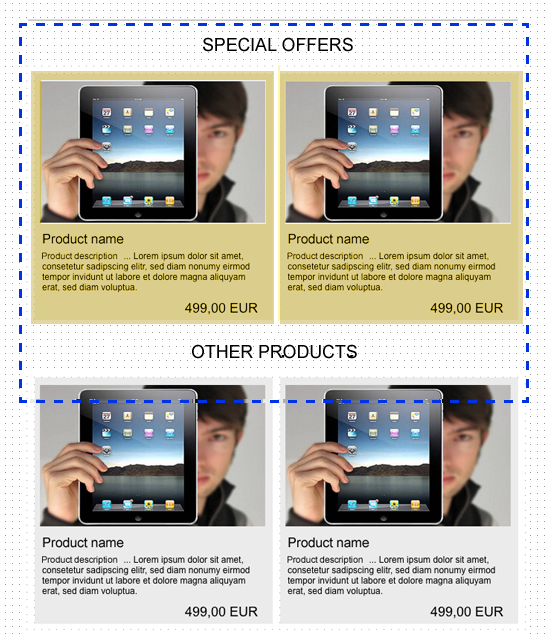
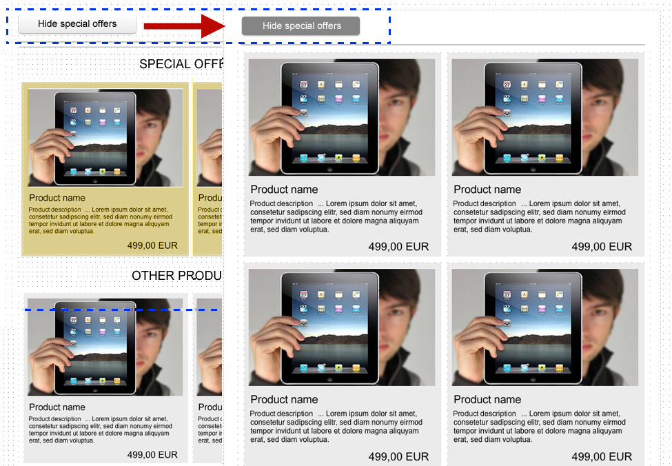
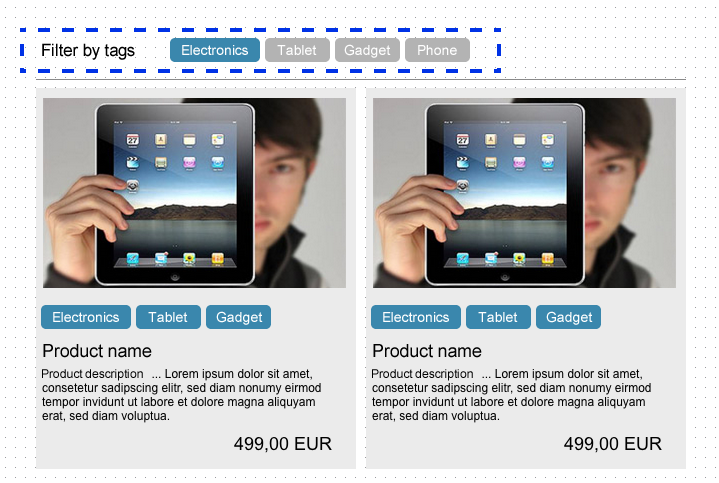

2a. Highlighting active sorting using different class (ngClass) // required

2b. Search - Filtering and Input box (ngModel, filter) // required

2c. Icons showing active ordering (ASC/DESC) (ngShow / ngClass) // worth doing

2d. Special offers displayed always on top of the list (double orderBy, custom compare, copy&paste)
// worth doing

2e. Hide special offers button // extra

2f. Filtering by tags / categories // extra
They can work like radio group (selecting one deselects others) or can be toggle buttons.
